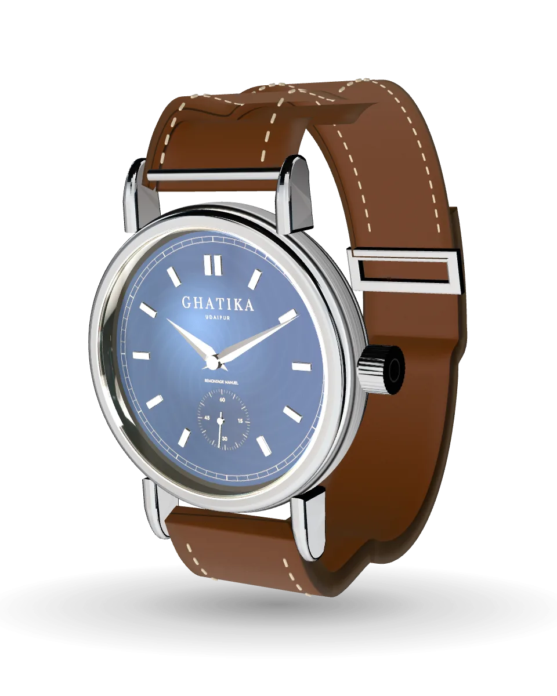
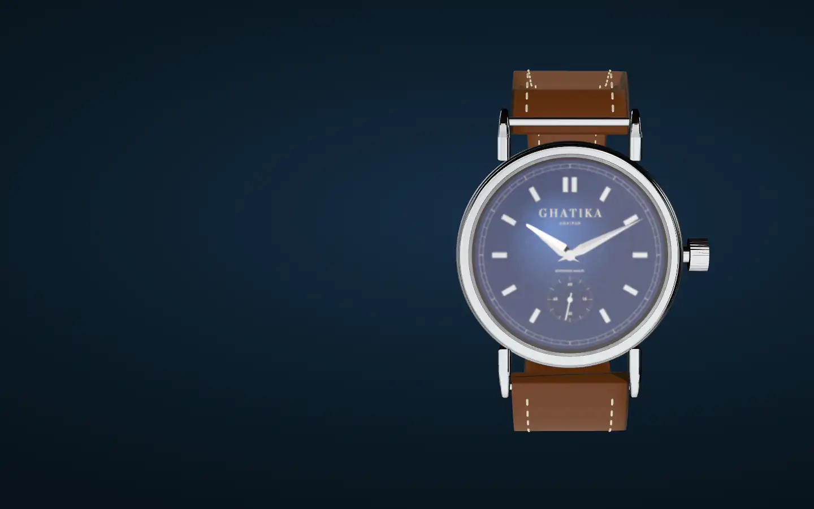
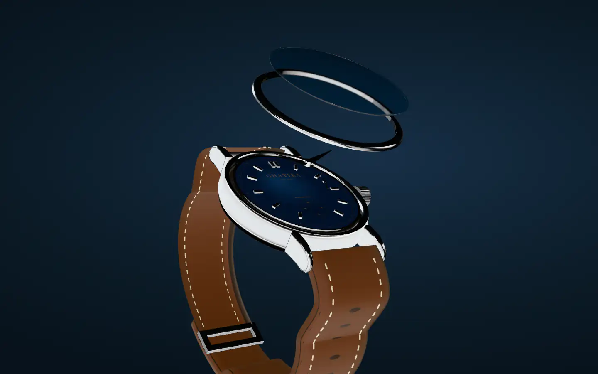
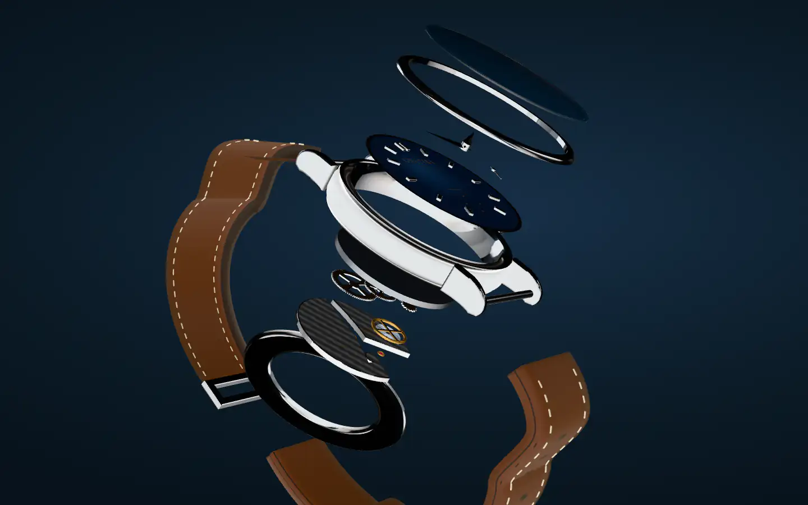
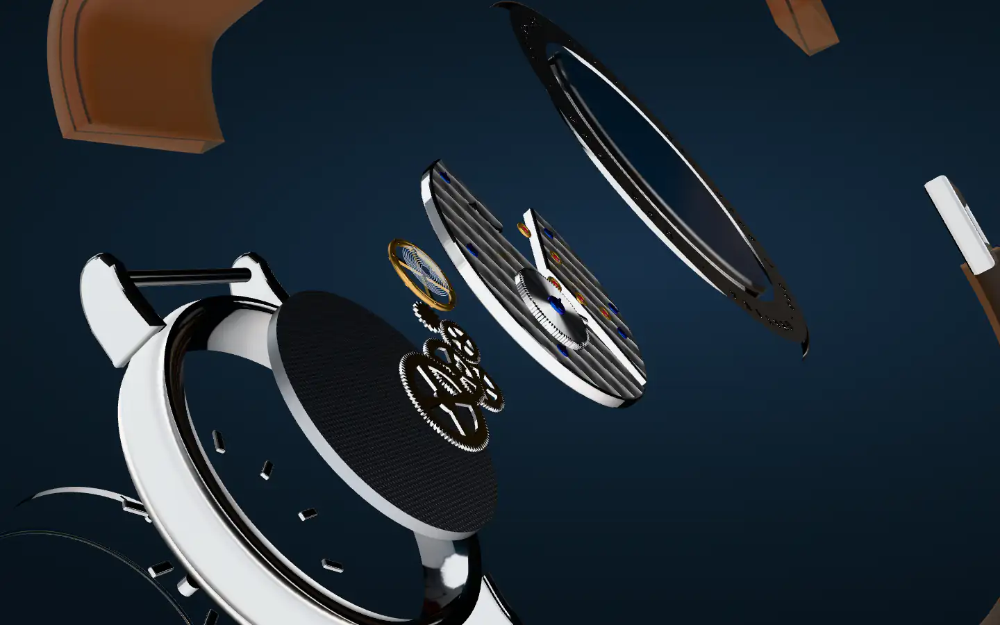
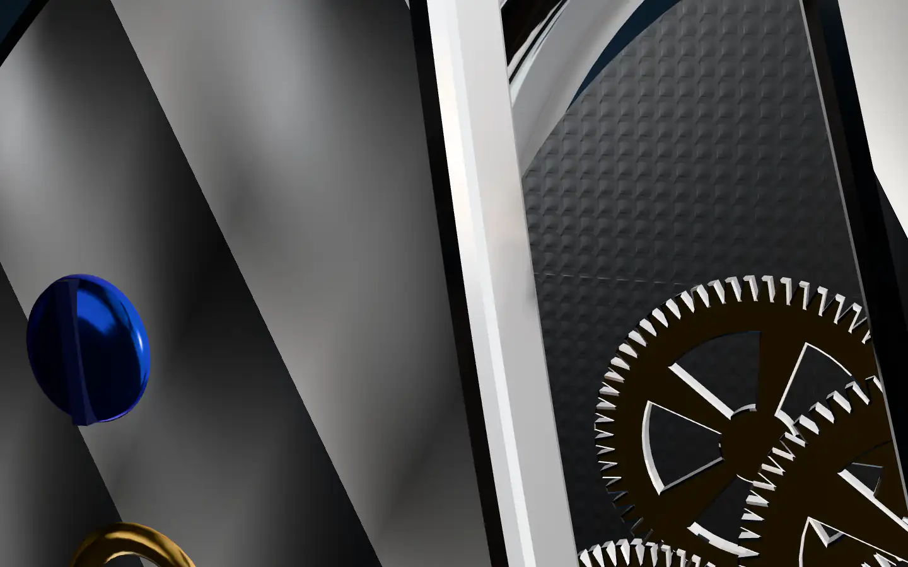
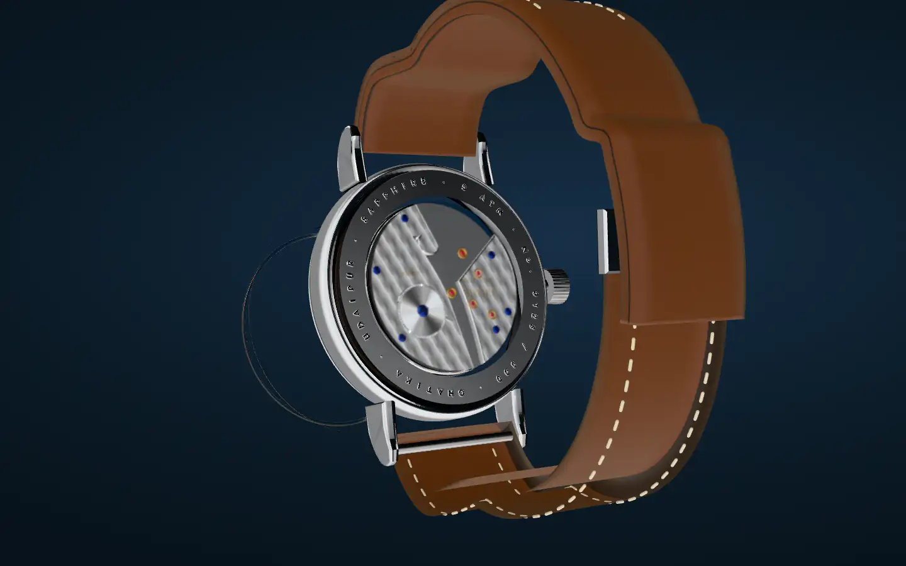
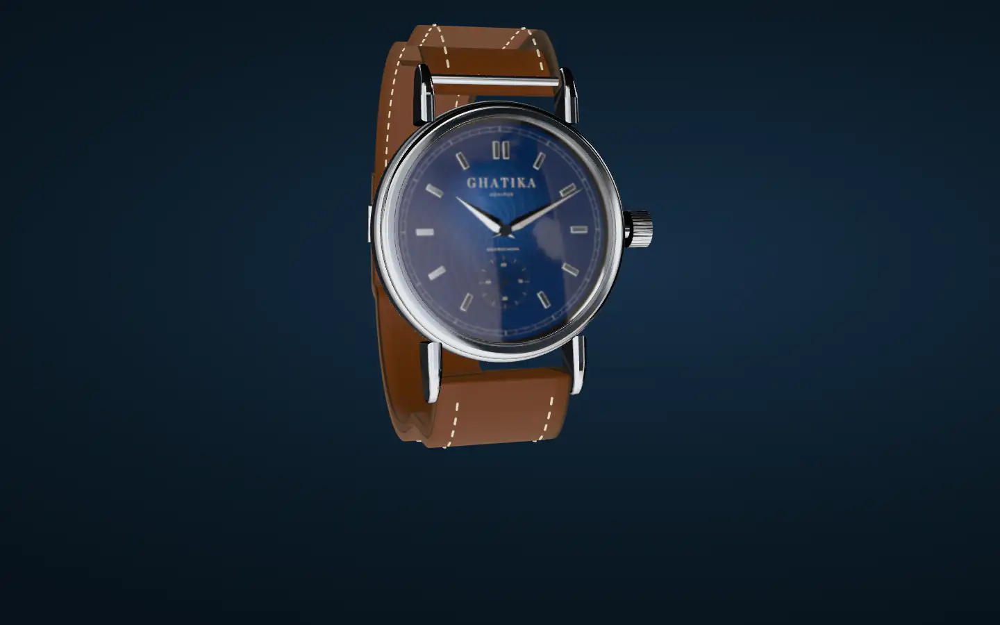

01 · GH-01.39The quietest watch we make. Hand-wound · small seconds.
Portfolio project by Abhishek

Udaipur · since 2019 · 300 watches a year
On the bench today: Prahar No. 0128
Ghatika makes three hundred mechanical watches a year in Udaipur. One watchmaker, thirty-eight days, every part finished by hand. Wind it, then take it apart.

A 1.1 mm sapphire dome, anti-reflective on the inside only. Dauphine hands with two facets, polished on a tin wheel.
Cut in 120 passes on a 1931 rose engine, each ridge 0.13 mm from the next. The waves come from the monsoon turbans of Mewar.

39 mm and 9.8 mm thin. Brushed flanks, a polished bevel, and lugs that curve down to meet the wrist.

A free-sprung balance beating six times a second, regulated in five positions to within four seconds a day.

Every edge filed to 45° and polished on gentian wood; every screw warmed on a brass tray until it turns cornflower blue.

Vegetable-tanned calf, saddle-stitched in Jodhpur. A numbered sapphire back, with your watchmaker’s initials beneath it.

And then it closes. Make it yours
Before clock towers, India kept time with a ghati: a copper bowl with a hole the width of a hair, floated on water. It fills, and sinks, in exactly one ghatika. Someone lifts it out, empties it and strikes a gong.
A watch is the same idea, made small: energy let go at a steady rate, and counted. We named the maison after the bowl because both only work if someone takes care of them.
We make one hand-wound, one moon and one traveller. Each is built to order around the dial, metal and strap you choose, and engraved on the back if you wish.

Turn it in a studio lit like ours, put it on a wrist your size, and engrave the back. Every combination is made to order in six weeks.
Open the configuratorOur watchmakers don’t work on a line. One person finishes, assembles, regulates and cases your watch, and signs it inside the back.
Four rooms, one hour each, no obligation. Bring the watch you wear every day and we’ll show you the difference a hand-finished movement makes.
Lal Ghat, by Lake Pichola
Our workshop and flagship. Watch the benches through a glass wall; the rose engine runs on Thursdays.
Tue–Sun · 11:00–19:30
Book UdaipurRampart Row, Fort
A first-floor salon above the bookshops, with a watchmaker in residence on Saturdays.
Mon–Sat · 11:00–20:00
Book MumbaiKalka Das Marg
A courtyard room facing the Qutub skyline. Evening appointments until nine on request.
Tue–Sun · 12:00–20:00
Book New DelhiAshok Nagar
Our newest room: a deep sofa, two lamps and every dial we make, on a quiet street by the park.
Mon–Sat · 11:00–19:30
Book Bengaluru
Craft · 8 November · 6 min
A machine older than Indian independence, a lever moved by hand, and 120 passes for a single lehariya dial.

History · 21 October · 5 min
Before clock towers, temples and courts measured the day with a copper bowl and a bucket of water. We named the maison after it.
Design · 30 September · 4 min
How a Rajasthani tie-dye became the pattern on our first watch.